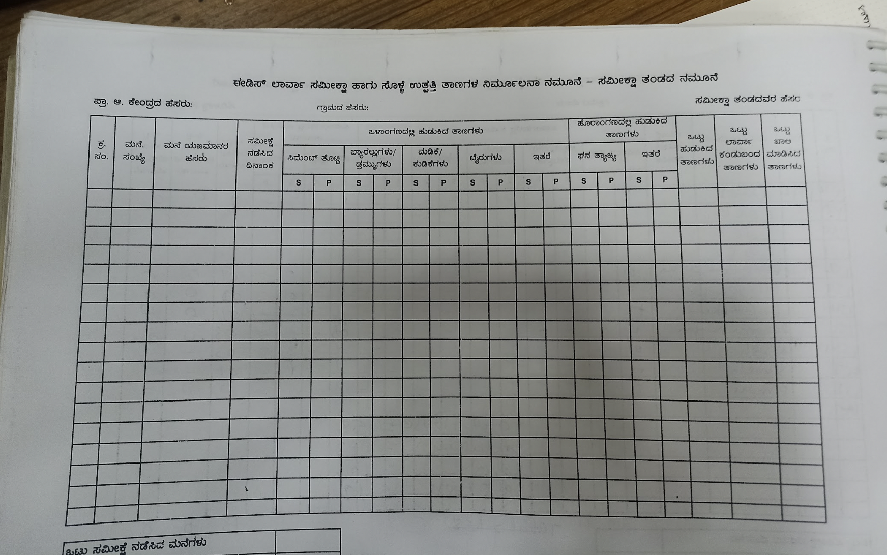
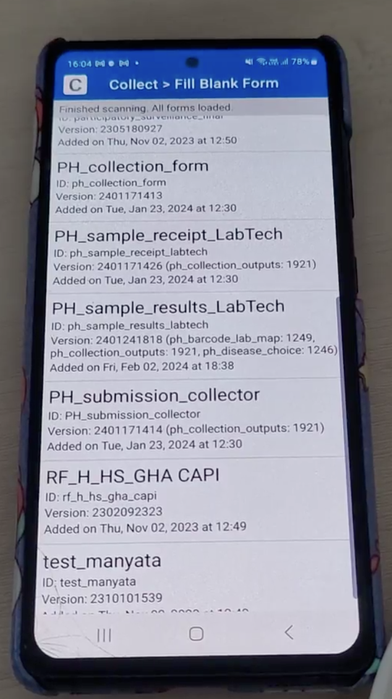
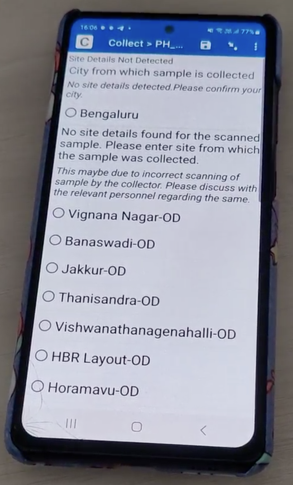
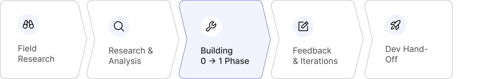
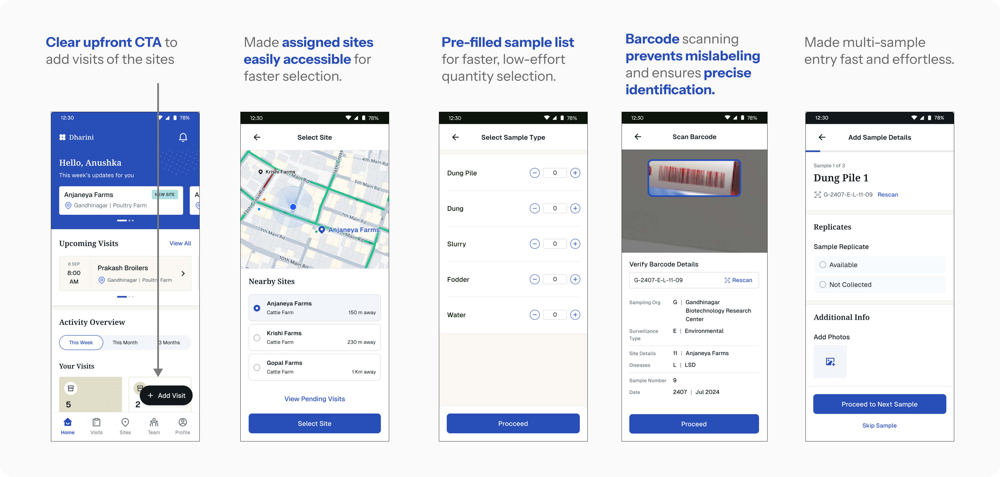
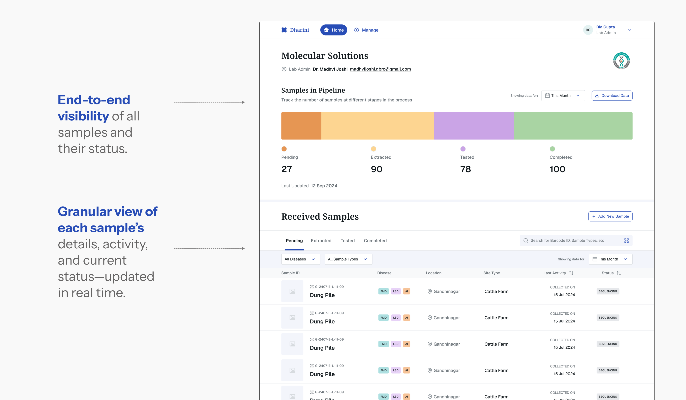
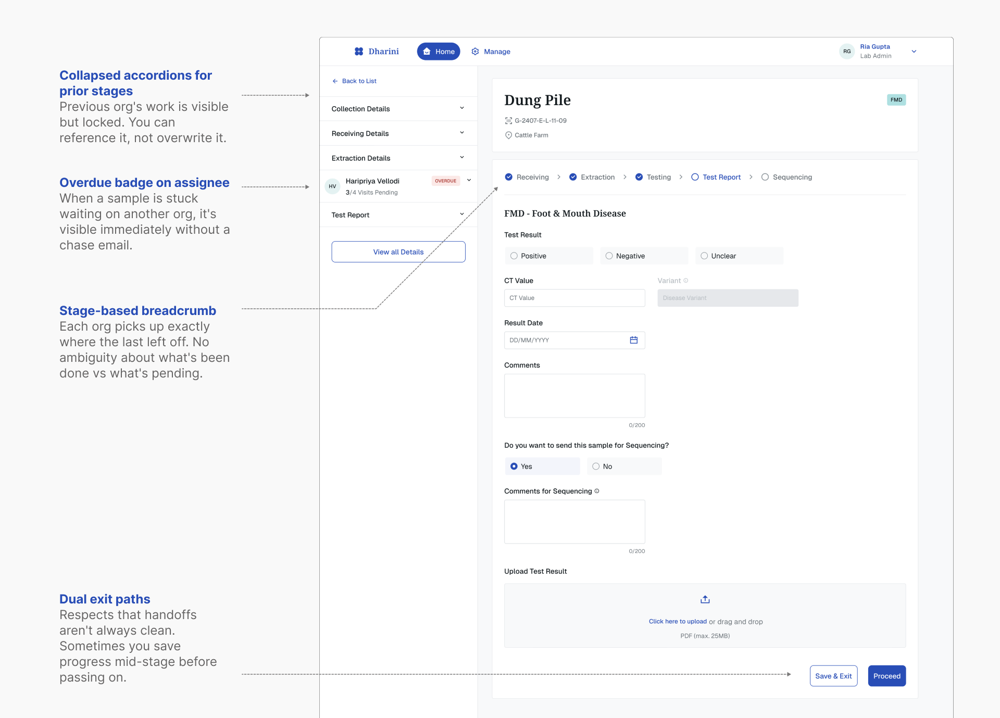
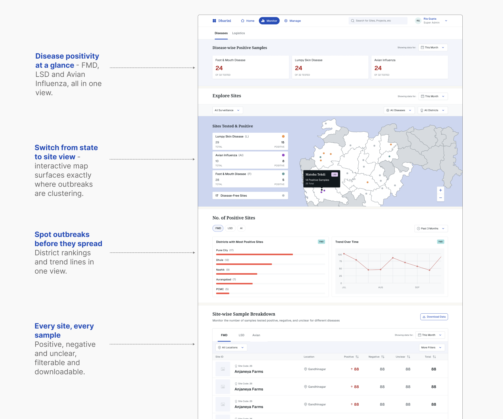
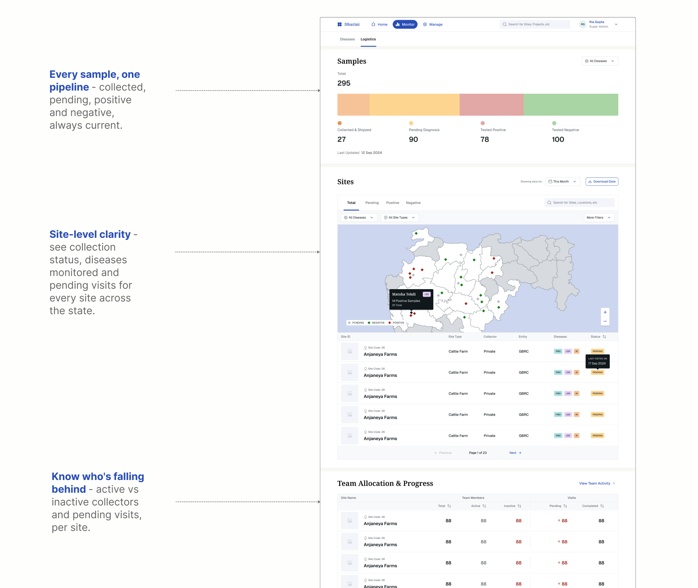
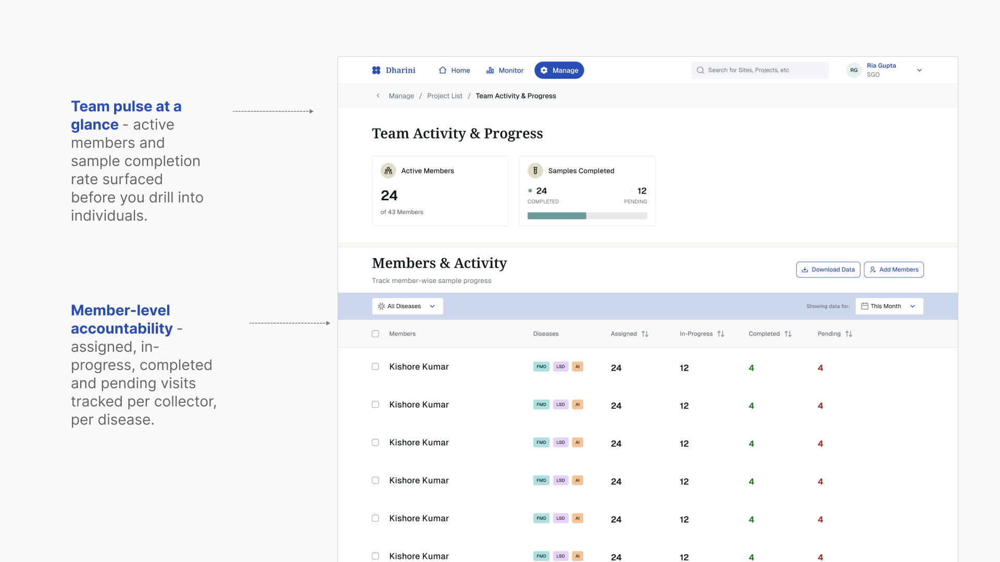

CONTEXT
India has lost thousands of livestock due to preventable diseases
India’s dairy sector is smallholder-dominated — roughly 75% of rural households keep 2–4 animals, and small/marginal farmers hold 60% of female cattle and buffaloes. FMD affecting even one animal can significantly dent household income.
In 2021, India saw 19,363 FMD attacks across 116 districts.
2M+
Cattle Affected
97k+
Deaths across 15 states

PROBLEM
No centralised system to monitor animal diseases
Currently the government has no centralised system to monitor animal diseases like FMD & LSD. The surveillance of these diseases is initiated by multiple stakeholders and is fragmented across geographies and organisations.
This leads to loss of data and delays in initiating vaccine drives.



Sample data is collected and stored across multiple forms, Google Sheets, apps and WhatsApp chains — with no single source of truth.
ARTPARK’S BRIEF
To design an MVP to digitize & standardize legacy, manual processes & eliminate data fragmentation through a unified ecosystem for government officials, diagnostic labs & sample collectors.
PROJECT PROCESS
Where I stepped in

I stepped in during the ‘Building from 0→1’ phase, where I had to absorb 6 weeks worth of research insights and analysis in a week to start with the design phase.
PRODUCT LEVEL HMWs
Framing the core system-level challenges before diving into user needs
Before looking at individual user journeys, we framed the overarching system challenges that would shape the entire platform architecture.
HMW 01
Unify & standardize a process & format of data collection & documentation across job roles?
HMW 02
Build flexibility to seamlessly switch between automated and manual data entry at different parts of the process?
HMW 03
Create a modular platform that adapts to different org structures & needs?
HMW 04
Accommodate varying data needs for tracking & reporting across roles & projects?
KEY STAKEHOLDERS
How does information flow?
We identified the main stakeholders and understood how information flows between each pillar.
Sample Collectors
Sample collectors visit dairy farms & sheds to collect environmental samples and send it to assigned labs
Lab Diagnosticians
Labs safely store the samples, test and generate reports
Data Consumers
Medical officers track & monitor disease data, report to higher officials
Admins & Super Admins
Project leads who set-up surveillance projects, onboard partners, monitors orgs & surveillance workflows
SOLUTIONS
Sample Collectors
INSIGHT 01
Tedious and inefficient data entry
Collectors find data entry long and tedious, often reverting to manual sheets when the app fails, leading to frustration.
HOW MIGHT WE
Ensure quick, efficient and error-free data entry for sample collectors who may lack context?

INSIGHT 02
Lack of Process Context
Collectors may not always possess the appropriate context or knowledge about the process, which leads to errors
HOW MIGHT WE
Better inform the collector of all collection & storage requirements to minimize error and maintain sample integrity?
SOLUTIONS
Lab Diagnosticians
INSIGHT 01
Inefficient Tracking of Samples
Updates or external communication is done manually through spreadsheets and emails. Keeping a track & storage is tedious.
HOW MIGHT WE
Enable labs to track and report critical milestones related to diagnostic processes and results?

INSIGHT 02
Tedious and Inefficient Manual Data entry
Updates or external communication is done manually through spreadsheets and emails. Keeping a track & storage is tedious.
HOW MIGHT WE
Enable diagnosticians to quickly & efficiently document their task progress at each step of the process

SOLUTIONS
Data Consumers
INSIGHT 01
Hard-to-Track Disease Progress
Disjointed data sources and manual spreadsheets made generating insights slow and unreliable.
HOW MIGHT WE
Enable users to track, and analyze report critical milestones related to the disease?

INSIGHT 02
Scattered Tracking of ES Activities
Data fragmented across multiple tools — users have to refer to various reports, spreadsheets, emails & WhatsApp for sample updates, disease data analysis etc.
HOW MIGHT WE
Provide better visibility to track all ES collection & diagnostic activities being carried out (end-to-end)?

SOLUTIONS
Admins & Super Admins
INSIGHT 01
Distributed Lab Operations
Testing & Sequencing activities aren’t always executed by one lab, sometimes it’s also outsourced to external orgs.
HOW MIGHT WE
Create a modular platform that adapts to different org structures & needs?
INSIGHT 02
Lack of Visibility Into Team Progress
Admins can’t track subordinate progress in the app and must rely on scattered Google Sheets or email updates.
HOW MIGHT WE
Improve the admin visibility of tasks performed by all collection & lab users to help them monitor and inform ES processes

REFLECTION
Little wins from this project
Ensured a frictionless design handoff, staying closely aligned with developers through full implementation.
Demonstrated fast learning agility, quickly digesting deep research and shaping early solution directions.
Felt the reward of designing with real societal impact, as the tools support government public health programs.